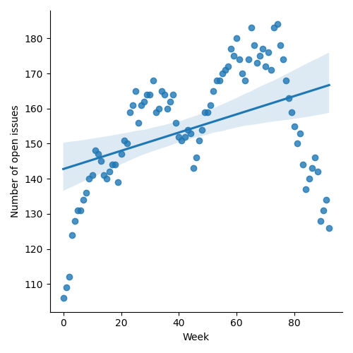
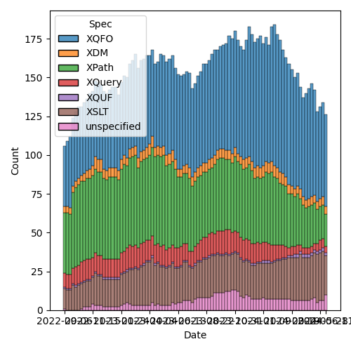
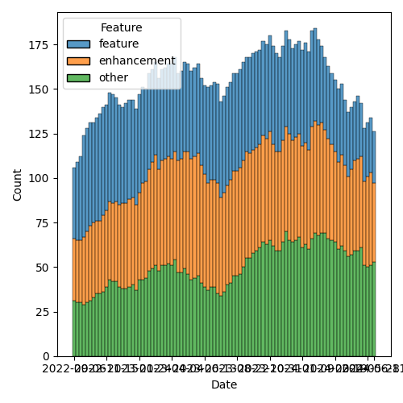

QT4 CG Meeting 082 Minutes 2024-06-18
Table of Contents
- Minutes
- Summary of new and continuing actions
[1/18] - 1. Administrivia
- 2. Technical Agenda
- 2.1. HTML 5 template element content
- 2.2. PR #1280: 1267 fn:apply contradictions
- 2.3. PR #1279: 1278 - line endings in unparsed-text-lines
- 2.4. PR #1276: QT4CG-081-03 parse-xml-[fragment]: $options should be optional
- 2.5. PR #1270: QT4CG-081-01 Add cross refererence from fn:round-half-to-even
- 2.6. PR #1268: QT4CG-077-03 Add note on document order across documents
- 2.7. PR #1264: 1245 Correct properties of format-DT function family
- 2.8. PR #1275: 1274 Further rounding modes
- 3. Any other business
- 4. Adjourned
Meeting index / QT4CG.org / Dashboard / GH Issues / GH Pull Requests
Minutes
Approved at meeting 083 on 25 June 2024.
Summary of new and continuing actions [1/18]
[ ]QT4CG-079-01: WP to seek expert advice on hashing functions.[ ]QT4CG-080-05: NW to add absolute property to the parse-uri output[ ]QT4CG-080-07: NW to update the build instructions in the README[ ]QT4CG-082-01: JLO to raise an issue about what to do when validation is requested but not possible.[ ]QT4CG-082-02: DN to work with MK to come to agreement on the fn:ranks proposal
1. Administrivia
1.1. Roll call [11/12]
CG gives regrets.
[X]Reece Dunn (RD) [x:10-][X]Sasha Firsov (SF)[ ]Christian Grün (CG)[X]Joel Kalvesmaki (JK)[X]Michael Kay (MK)[X]Juri Leino (JLO)[X]John Lumley (JLY)[X]Dimitre Novatchev (DN)[X]Wendell Piez (WP)[X]Ed Porter (EP)[X]C. M. Sperberg-McQueen (MSM)[X]Norm Tovey-Walsh (NW). Scribe. Chair.
1.2. Accept the agenda
Proposal: Accept the agenda.
Accepted.
1.2.1. Status so far…

Figure 1: “Burn down” chart on open issues

Figure 2: Open issues by specification

Figure 3: Open issues by type
1.3. Approve minutes of the previous meeting
Proposal: Accept the minutes of the previous meeting.
Accepted.
1.4. Next meeting
This next meeting is planned for 25 June.
CG gives regrets for two weeks.
1.5. Review of open action items [15/18]
[X]QT4CG-063-06: MK to consider refactoring the declare item type syntax to something like declare record[X]QT4CG-077-04: MK to review inconsistencies discovered in review of #1117[X]QT4CG-078-01: MK to make the default for normalize-newlines backwards compatible.[ ]QT4CG-079-01: WP to seek expert advice on hashing functions.[X]QT4CG-080-01: NW to add what the DocBook stylesheets do for this function[X]QT4CG-080-02: NW to fix issue classification so PR #1181 isn’t misclassified as an XSLT issue[X]QT4CG-080-03: MK to make a separate issue for @as on xsl:value-of[X]QT4CG-080-04: NW to revise p:invisible-xml[ ]QT4CG-080-05: NW to add absolute property to the parse-uri output[X]QT4CG-080-06: NW to investigate the cross-spec reference errors in the build[ ]QT4CG-080-07: NW to update the build instructions in the README[X]QT4CG-080-08: MK to work out what happened to his next-match PR[X]QT4CG-080-09: MK to address comments made on PR #832[X]QT4CG-081-01: MK to update fn:round-to-even to point to fn:round[X]QT4CG-081-02: NW to make an issue about how grammar productions should be identified[X]QT4CG-081-03: MK to make the options parameter optional infn:parse-xmlandfn:parse-xml-fragment[X]QT4CG-081-04: NW to update the function signature of fn:invisible-xml[X]QT4CG-081-04: NW to describe why the grammar option can be empty on fn:invisible-xml
MK reports creating issues for his actions, so the actions are marked as completed.
1.6. Review of open pull requests and issues
1.6.1. Substantive PRs
The following substantive PRs were open when this agenda was prepared.
- PR #1280: 1267 fn:apply contradictions
- PR #1279: 1278 - line endings in unparsed-text-lines
- PR #1276: QT4CG-081-03 parse-xml-[fragment]: $options should be optional
- PR #1275: 1274 Further rounding modes
- PR #1270: QT4CG-081-01 Add cross refererence from fn:round-half-to-even
- PR #1268: QT4CG-077-03 Add note on document order across documents
- PR #1266: 1158 Add array mapping operator
- PR #1265: 1161 Further revision of document-uri constraints
- PR #1264: 1245 Correct properties of format-DT function family
- PR #1262: 1160 Add collation-available() function
- PR #1254: 729 Add rules for use of xsi:schemaLocation during validation
- PR #1244: 566-partial Rewrite parse-uri
- PR #1228: – Adding the BLAKE3 hashing algorithm to fn:hash
- PR #1209: 1183 Add transient mode and the transient{} expression
- PR #1185: 1179 array:values, map:values → array:get, map:get
1.6.2. Proposed for V4.0
The following issues are labled “proposed for V4.0”.
- Issue #1225: Generalization of Deep Updates
- Issue #1069: fn:ucd
- Issue #938: Canonical serialization
- Issue #850: fn:parse-html: Finalization
- Issue #755: Expression for binding the Context Value
- Issue #689: fn:stack-trace: keep, drop, replace with $err:stack-trace ?
- Issue #657: User-defined functions in main modules without `local` prefix
- Issue #576: JSON serialization: Sequences, INF/NaN, function items
- Issue #501: Error handling: Rethrow errors; finally block
- Issue #150: fn:ranks: Produce all ranks in applying a function on the items of a sequence
- Issue #37: Support sequence, array, and map destructuring declarations
- Issue #31: Extend FLWOR expressions to maps
2. Technical Agenda
2.1. HTML 5 template element content
This is a follow-up from the face-to-face meeting, see issue 75.
RD introduces the template element starting at https://html.spec.whatwg.org/multipage/scripting.html#the-template-element
- RD: When the HTML parser parses the template element and adds it into the DOM, it doesn’t
add the child elements as children of the template, it constructs a document fragment and
attaches that to the content property of the HTML template DOM.
- … That’s what
element.contentreturns in JavaScript - … It’s a
DocumentFragment(), a new node type in HTML5. - … There’s also a
ShadowRootfor similar style document fragments.- … The other shadow roots can only be constructed with JavaScript
- … That’s what
- RD: When you parse the HTML document, you get the HTML DOM but the
template doesn’t have any child elements.
- … A document fragment isn’t a document, it can have multiple roots.
RD demonstrates a query in an online, interactive environment.
- RD: The WHATWG defines two different behaviors for XSLT and XPath.
- If you use XSLT, then the template element should behave as if the content elements are child elements.
- But if you’re using XPath, then you don’t.
- RD: That’s why the HTML parse options has an
include-template-contentoption. It lets you control which behavior you want when parsing the document.- … That’s also why the children accessor in the HTML DOM section is complicated.
- … But we aren’t supporting document fragments because they aren’t nodes in the XDM.
- … Can we add support for templates by adding a new XDM node type?
- SF: It happens that
contentis only materialized at the moment of attachment when the browser adds it to the DOM.- … When we are working on the parser level, you’re never dealing with the HTML not the virtual, detatched DOM.
- … The template behavior is triggered when the content is attached to the document.
- … I don’t see any reason to handle the templates differently. During the transformation, you don’t want to simulate what the browser does.
- … Perhaps in the future, there will be reuse for the templates. So they aren’t injected, they’re reused during the rendering.
- RD: If you’re using an HTML5 compliant parser, it’ll be using the algorithm that handles templates. There are two modes: tokenization (tag name and attribute parsing into a node name and attributes blob) and then it runs the tree construction which builds the HTML DOM.
- SF: Yes, when it does the attachment, that’s when the different
behavior happens. But we’re using XSLT before we’re attaching to the DOM.
- In both cases, the attachment step happens on the browser level, so I don’t need it at the XSLT layer.
- Once it’s adopted by the original DOM, it’s tranformed into the fragment.
- When we do the XSLT transformation, we’re receiving the HTML as a DOM tree, but this doesn’t need to be “unwrapped”. It doesn’t need to have the document fragments inside.
- JLY: Is the template trying to be like a def/use in SVG?
- RD: Yes, effectively.
- SF: It’s not exactly reuse, you have to clone it.
- NW: I think there are two cases: can we generate templates, easy. If we’re loading an HTML5 DOM into an XDM, then we can punt to “implementation defined” at some point.
- RD: I’ve tried to handle some of the DOM to XDM transformations in the specification.
- MK: What is the gap in the current spec? What’s the issue in the status quo text?
- RD: The gap really is that the HTML DOM defines a document fragment
node and the XDM doesn’t support that.
- … So we are currently working around that by dealing with the templates by skipping the document fragment part and treating it as if it doesn’t exist.
- MK: And why is that a problem?
- SF: The original idea of having templates and document fragments is
isolation. The isolation is on many different layers: APIs, CSS,
DOMs, etc. That’s done for the purpose. We can either ignore it, or
actually honor it.
- … It would be logical to have some support for templates. They can be open or closed. If they’re open, you can see everything. If they’re closed, they’re a black box.
- … There is a plan to have even more open-styleable content. This is on a per-template instance.
- JLO: I think that document fragments predate HTML 5. I haven’t found
when they were introduced, but I’ve definitely had to deal with
them.
- … I don’t see that we need to have this isolation. If someone wants to deal with template elements in that way, then they can.
- NW: Can we have a concrete use case?
- DN: I don’t think the description of XPath and XSLT integration is very clear. Does the browser call them? Which version will be used? Can templates be nested? Maybe we need to get in contact with the HTML authors to get on the same pages.
NW pulls his chair’s hat down over his ears and draws this section to a close.
2.2. PR #1280: 1267 fn:apply contradictions
See PR #1280.
MK introduces the issue.
- MK: There are a few simple fixes, bu the substacne is in the
fn:applyfunction.- … I’ve changed the spec to be clear that the size of the array doesn’t have to exactly match the number of arguments.
- JLO: I like this. I just fear that this has consequences that I can’t see. Ignoring excess arguments worries me.
- MK: It’s making it consistent with dynamic function calls where this already happens.
- DN: I know that we adopted the rule that a function can be called
with extra arguments that are ignored. Now I’m worried about it a
little bit. Doesn’t this effect the type safety?
- … In JavaScript isn’t this only allowed in callbacks?
- … Are we proposing to allow static function calls to have additional arguments?
- … Maybe we need to be more careful about when this is allowed?
- … Perhaps we can even add a keyword that signals functions are allowed to have extra arguments.
- MK: I share some of the reservations, but I think
fn:applyneeds to be made consistent with dynamic function calls. - DN: I think we need to constrain this feature.
- MK: Would you like to raise a new issue on that?
- DN: I’m a little tired of having things going into the spec that I didn’t agree with.
Anyone in favor? Several thumbs up. Anyone opposed: DN expresses reservations.
- JLY: We’re not talking about static function excess arguments, isn’t that right?
- MK: No, this is only about dynamic function calls.
- DN: It’s very easy to make a static function into a dynamic function, just assign it to a variable.
Proposal: merge this PR.
Accepted.
2.3. PR #1279: 1278 - line endings in unparsed-text-lines
See PR #1279.
- MK: This originated with CG. This PR attempts to address an issue raised by CG.
- MK: Unparsed text lines should continue as they did in 3.1, always
treating CR/LF and newline as equivalent.
- … This removes the normalize newline option, reverting to the 3.1 spec.
Proposal: accept this PR.
Accepted.
2.4. PR #1276: QT4CG-081-03 parse-xml-[fragment]: $options should be optional
See PR #1276.
- MK: This one is extremely trivial. It just adds a question mark to the options parameter so that an empty sequence is allowed.
- JLO: Last week we merged in the validation options. Are those optional?
- MK: XSD validation is an optional feature. We should say what
happens if you are in a non-schema aware processor.
- … We ought to say the same thing for DTD validation. If you can’t validate raise an error.
- SF: There’s a need for validation and schema capabilities; it would be nice if we have a separate meeting about this. it touches very many questions here. In the community and on the web, it’s a critical issue.
Proposal: accept this PR.
Accepted.
ACTION: QT4CG-082-01: JLO to raise an issue about what to do when validation is requested but not possible.
2.5. PR #1270: QT4CG-081-01 Add cross refererence from fn:round-half-to-even
2.6. PR #1268: QT4CG-077-03 Add note on document order across documents
See PR #1268.
- MK: This adds a note that was requested in discussion of another proposal. It reinforces document order across documents.
Proposal: accept this PR.
Accepted.
2.7. PR #1264: 1245 Correct properties of format-DT function family
See PR #1264.
- MK: This merely brings the text on properties up to date with the spec. Several arguments now have defaults.
Proposal: accept this PR.
Accepted.
2.8. PR #1275: 1274 Further rounding modes
See PR #1275.
- MK: The rounding mode names differed from the names that Java used. That got me looking around, so now I’m proposing that we extend the set of modes we offer.
MK summarizes the nine modes.
- MK: That full set of nine is offered on .NET, Java offers seven.
- … Java offers the capability to offer all nine.
- … You can support any of the modes by some combination of changing the sign, rounding, etc.
Proposal: accept this PR.
Accepted.
3. Any other business
- DN: What happened to the action that MK and I had to come to a resolution on fn:ranks?
- NW: I don’t recall, apologies if that got accidentally dropped. I’ll put it back.
(On further investigation, the minutes of meeting 079 say that “DN will attempt to work with MK” but don’t record an explicit action; the scribe will add one now.)
ACTION: QT4CG-082-02: DN to work with MK to come to agreement on the fn:ranks proposal